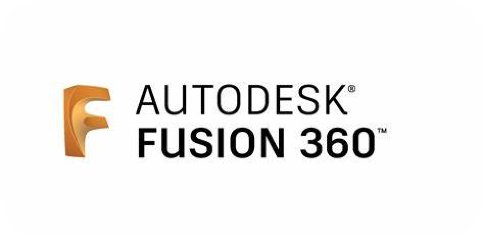

Fusion 360 is a cloud-based 3D modeling, CAD, CAM, CAE, and PCB
software platform for product design and manufacturing. It is
developed by Autodesk, the leading provider of CAD software and
services. .
Fusion 360 has a powerful blend of parametric, direct, freeform, and
rules-based design capabilities, which allow you to create and modify
complex and organic shapes with precision and efficiency. Fusion 360
also has integrated tools for sheet metal, rendering, simulation,
generative design, and more.
Fusion 360 can also connect with other Autodesk products, such as
AutoCAD, Inventor, and Revit, and support generative design and
additive manufacturing. Fusion 360 is compatible with various file
formats and platforms, such as DWG, PDF, STL, STEP, and more.
Fusion 360 is one of the most popular and widely used CAD software in
the world, and it is suitable for various industries and applications,
such as architecture, engineering, product design, industrial design,
and more.
Main Features of Fusion 360
You can create and edit 3D models using different methods, such as
sketching, direct, surface, parametric, mesh, and free-form modeling.
You can also render your models and integrate PCB design.
Manufacturing: You can program CNC machines, 3D printers, and other
fabrication tools using the integrated CAD/CAM features. You can
choose from various machining strategies, such as 2D, 3D, multi-axis,
turning, and probing.
You can design and simulate electronic circuits and PCBs using the
unified electronics design tools. You can also manage your components
and collaborate with ECAD and MCAD designers on the same design.
You can test and optimize your designs using the built-in simulation
tools. You can perform various types of analysis, such as static and
thermal stress, modal frequency, buckling, event simulation, shape
optimization, and more.
Collaboration and data management:
You can share and manage your projects securely with your team and
stakeholders using the cloud collaboration and data management
features. You can review designs, track changes, and provide feedback
in real-time using a single tool.
Specific Features Only to Fusion 360
You can explore multiple design alternatives and outcomes using the
generative design technology. You can specify your design goals,
constraints, materials, and manufacturing processes, and let Fusion
360 generate and evaluate solutions for you.
You can access additional tools and workflows specifically designed
for advanced manufacturing processes. These extensions include
capabilities for advanced machining strategies, nesting, and sheet
metal fabrication.
Fusion 360 API and scripting:
You can customize and automate Fusion 360 using the application
programming interface (API) and scripting capabilities. You can extend
Fusion 360’s functionality, automate repetitive tasks, and integrate
with external systems, enhancing productivity and efficiency in your
design workflows.
You can access, share, and manage your data and projects on the cloud,
as well as collaborate and communicate with other users in real time.
You can also use the cloud to store and backup your data, as well as
sync and update your data across different devices.
You can perform various types of simulations and analyses on your
model, such as stress, motion, thermal, fluid, and more, using the
cloud computing power and intelligence. You can also use the cloud to
compare and validate different design scenarios and outcomes, as well
as generate reports and insights.
You can create stunning and photorealistic renderings and animations
of your model, using the cloud rendering engine and resources. You can
also use the cloud to customize and enhance your renderings, as well
as share and view your renderings on any device.
-
It is cloud-based, which means you can access your data and
projects from anywhere, anytime, and on any device. You can also
collaborate and share your work with others easily and securely.
-
It is simple and user-friendly, which means you can learn and use
it quickly and easily, without requiring a lot of training and
practice. You can also customize and personalize your workspace
and preferences according to your needs and style.
-
It is flexible and versatile, which means you can create and edit
any type of 3D model, from basic shapes and geometries to complex
and organic forms. You can also switch between different modeling
modes, such as parametric, direct, freeform, and rules-based,
depending on your design intent and workflow.
-
It is comprehensive and integrated, which means you can perform
various tasks and functions within the same software, without
requiring multiple applications or plugins. You can also leverage
the power and intelligence of the cloud to perform advanced
simulations and analyses, as well as generate multiple and optimal
design solutions.
-
It is dependent on the internet connection, which means you may
experience lag, delay, or interruption in your work, especially if
your connection is slow, unstable, or unavailable. You may also
encounter issues with data security and privacy, as your data is
stored and processed on the cloud.
-
It is limited and buggy, which means you may encounter some
features and functions that are not fully developed, supported, or
compatible with your design needs and expectations. You may also
encounter some errors and glitches that may affect your work
quality and performance.
-
It is expensive and demanding, which means you may need to pay a
subscription fee to use the software, as well as a high system
requirement to run the software smoothly and efficiently. You may
also need to update and patch the software frequently to ensure
its functionality and stability.
Getting Started with Fusion 360
You can download and install Fusion 360 from the official Autodesk
website
here . You can get a free trial or a subscription, depending on your
eligibility and needs.
Introduction to the Workspace
Sketching with Fusion 360
Sculpting with Fusion 360
Managing and Collaboration with Fusion 360
Assembling with Fusion 360
Rendering with Fusion 360
2D Drawing with Fusion 360
CAM Design with Fusion 360